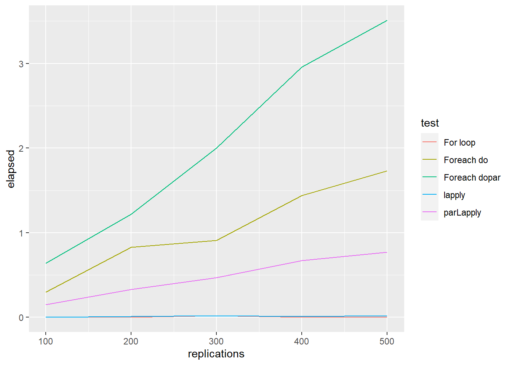
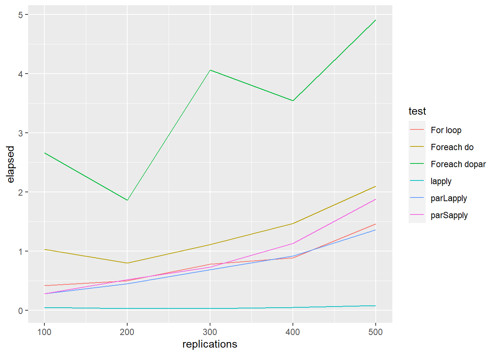
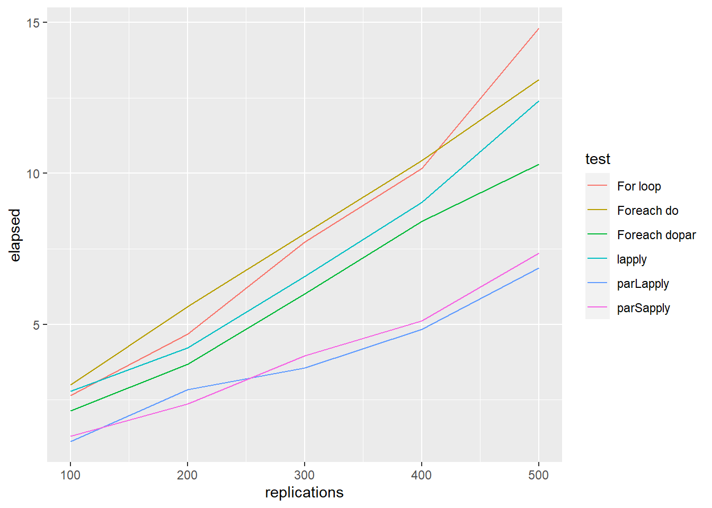

2 Regresion lineal con Big Data
En la era de los macrodatos (Big Data), podemos tener acceso a grandes volúmenes de datos obtenidos de nuestra población de interés teniendo así la oportunidad de analizar la población prácticamente en su totalidad. Sin embargo, los algoritmos tradicionales para incluso los métodos estadísticos más sencillos (descriptivas, regresión lineal, …) necesitan mucho tiempo de computación. Para resolver este problema de computación, una de las aproximaciones que disponemos es dividir nuestros datos en conjuntos más pequeños que no requieran tanto coste computacional y combinar estos resultados de forma inteligente de forma que nos permita resolver el problema más grande. Esto se puede hacer paralelizando los cálculos puesto que incluso los ordenadores portátiles ya disponen de multiples cores de computación, y/o combinar los cálculos con paradigmas como MapReduce que ha diseñado para tratar Big Data de forma eficiente. Es por ello que en esta sección aprenderemos a:
- Paralelizar en R
- Usar MapReduce
- Ver una aplicación de cómo implementar la regresión lineal múltiple en un sistema distribuido
2.1 Paralelización
There are several R packages to perform parallel computing. The reason for using doParallel package, and not parallel, is that the parallel package is not working entirely on Windows and you had to write different code for it to work. The doParallel package is trying to make it happen on all platforms: UNIX, LINUX and WINDOWS, so it’s a pretty decent wrapper. To me, the most simple way of doing parallelization is to use mclapply() function from parallel but this cannot be used in Window.
Let us assume we want to compute \(f(x)=x^2 + x\) of 10 numbers stored in a vector called vec.
We can do the following strategies:
- Looping
- Using
lapply ()orsapply ()function
- Using
doParallel::parLapply()function
We need first to create the cluster
library(doParallel)
ncores <- detectCores() - 1
registerDoParallel(cores=ncores)
cl <- makeCluster(ncores) Then, we can use the parallel implementation of lapply
- Using
doParallel::foreach()function
- Using
parallel::mclapply()function
# Only works in Linux (Windows ncores must be set equal to 1)
result <- mclapply(x, f, mc.cores=ncores)In order to compare computation time, we can run
## user system elapsed
## 0 0 0Nonetheless, rbenchmark function serves as a more accurate replacement of the often seen system.time() function and the more sophisticated system.time(replicate(1000, expr)) expression (that incorporates variability). It tries hard to accurately measure only the time it takes to evaluate expr. To achieved this, the sub-millisecond (supposedly nanosecond) accurate timing functions most modern operating systems provide are used. Additionally all evaluations of the expressions are done in C code to minimize any overhead. In our example:
library(rbenchmark)
library(doParallel)
ncores <- detectCores() - 1
registerDoParallel(cores=ncores)
cl <- makeCluster(ncores)
testdata1 <- benchmark("For loop" = forFunction(vec),
"lapply" = lapplyFunction(vec),
"Foreach dopar" = foreachDoParFunction(vec),
"Foreach do" = foreachDoFunction(vec),
"parLapply" = parLapplyFunction(cl=cl, x=vec, f=f),
columns=c('test', 'elapsed', 'replications'),
replications = c(100, 200, 300, 400, 500))
ggplot() +
geom_line(aes(x = replications, y = elapsed, colour = test), data = testdata1)
Another example could be to compare the performance of the five methods for matrix multiplication
set.seed(12345)
A <- matrix(rnorm(20), nrow=4, ncol=5)
B <- matrix(rnorm(20), nrow=4, ncol=5)
FUN <- function(i, A, B){
crossprod(A,B)
}
a <- as.list(1:10)
testdata2 <- benchmark("For loop" = for(i in 1:length(a)){FUN(i, A, B)},
"lapply" = lapply(a, FUN = FUN, A=A, B=B),
"Foreach dopar" = foreach(i = 1:10) %dopar% FUN(i, A, B),
"Foreach do" = foreach(i = 1:10) %do% FUN(i, A, B),
"parLapply" = parLapply(cl = cl, X = a, fun = FUN, A=A, B=B),
"parSapply" = parSapply(cl = cl, X = a, FUN = FUN, A=A, B=B),
columns=c('test', 'elapsed', 'replications'),
replications = c(100, 200, 300, 400, 500))
ggplot() +
geom_line(aes(x = replications, y = elapsed, colour = test), data = testdata2)
Finally, another example could be to compare the performance of the five methods for fitting generalized linear model
FUN <- function(i) {
ind <- sample(100, 100, replace=TRUE)
mod <- glm(Species ~ Sepal.Length, family=binomial(logit), data = iris[ind,])
coefficients(mod)
}
a <- as.list(1:10)
testdata3 <- benchmark("For loop" = for(i in 1:length(a)){ FUN(a[[i]])},
"lapply" = lapply(a, FUN = FUN),
"Foreach dopar" = foreach(i = 1:10) %dopar% FUN(i),
"Foreach do" = foreach(i = 1:10) %do% FUN(i),
"parLapply" = parLapply(cl = cl, X = a, fun = FUN),
"parSapply" = parSapply(cl = cl, X = a, FUN = FUN),
columns=c('test', 'elapsed', 'replications'),
replications = c(100, 200, 300, 400, 500))
ggplot() +
geom_line(aes(x = replications, y = elapsed, colour = test), data = testdata3)
To sum up, generally, parLapply () perform better than foreach (). However, for all parallel implementation methods, the increase in terms of efficiency is not proportional to the number of cores being used (Theoretical efficiency).
2.2 MapReduce
One year later, Google published a new paper describing how to perform operations across the Google File System, an approach that came to be known as MapReduce.1 As you would expect, there are two operations in MapReduce: map and reduce. The map operation provides an arbitrary way to transform each file into a new file, whereas the reduce operation combines two files. Both operations require custom computer code, but the MapReduce framework takes care of automatically executing them across many computers at once. These two operations are sufficient to process all the data available on the web, while also providing enough flexibility to extract meaningful information from it.
For example, as illustrated in next Figure, we can use MapReduce to count words in two different text files stored in different machines. The map operation splits each word in the original file and outputs a new word-counting file with a mapping of words and counts. The reduce operation can be defined to take two word-counting files and combine them by aggregating the totals for each word; this last file will contain a list of word counts across all the original files. Counting words is often the most basic MapReduce example, but we can also use MapReduce for much more sophisticated and interesting applications in statistics.

MapReduce example counting words across files
After these papers were released by Google, a team at Yahoo worked on implementing the Google File System and MapReduce as a single open source project. This project was released in 2006 as Hadoop, with the Google File System implemented as the Hadoop Distributed File System (HDFS). The Hadoop project made distributed file-based computing accessible to a wider range of users and organizations, making MapReduce useful beyond web data processing. In the R language, processing data via MapReduce is accomplished by the rmr2 and rhdfs packages. The R programmer needs to just divide their application logic into the map and reduce phases and submit it with the rmr2 methods. Once this has been performed, `rmr2 calls the Hadoop streaming MapReduce API with several job parameters as input directory, output directory, mapper, reducer, and so on, to perform the R MapReduce job over Hadoop cluster.
The MapReduce paradigm has long been a staple of big data computational strategies. However, properly leveraging MapReduce in R can be a challenge, even for experienced users. To get the most out of MapReduce, it is helpful to understand its relationship to functional programming.
La programación funcional, en un sentido amplio, es aquella en que determinadas funciones admiten otras como argumento. Por ejemplo, la función sapply():
## [1] 1.9218121 1.2069490 0.4804530 0.0000000 Inf 0.0000000 0.6931472 1.0986123 1.3862944 1.6094379 1.7917595 1.9459101
## [13] 2.0794415 2.1972246 2.3025851La programación funcional es una herramienta muy potente que permite programar de la siguiente manera:
- Crear funciones pequeñas y simples que resuelven un problema pequeño y acotado
- Aplicar esas funciones a grupos homogéneos de valores.
En el ejemplo anterior, hemos construido una función ff y me diante la función sapply() la hemos aplicado a una lista de valores homogéneos, los números del -4 al 10.
Hay muchas funciones en R, algunas de las cuales ya habéis visto, que admiten otras como argumento. Algunas de las más corrientes son:
- sapply y lapply
- tapply
- apply y mapply
- Las funciones ddply, ldply, etc. del paquete
plyr
Un ejemplo muy habitual de este tipo de funciones se usa para inspeccionar el tipo de columnas de una tabla ya que aprovechan el hecho que una tabla es una lista de columnas y las recorren una a una
## $Sepal.Length
## [1] "numeric"
##
## $Sepal.Width
## [1] "numeric"
##
## $Petal.Length
## [1] "numeric"
##
## $Petal.Width
## [1] "numeric"
##
## $Species
## [1] "factor"## Sepal.Length Sepal.Width Petal.Length Petal.Width Species
## 150 150 150 150 150Una de las ventajas de este tipo de programación es que el código es más breve y legible. Debemos recordar que estas fuciones incluyen el argumento ... que permite pasar argumentos adicionales a la función a la que llaman. Por ejemplo esta función haría lo mismo que la anterior, pero sería más genérica ya que permitiría hacer cálculos variando el argumento s.
## [1] 1.9218121 1.2069490 0.4804530 0.0000000 Inf 0.0000000 0.6931472 1.0986123 1.3862944 1.6094379 1.7917595 1.9459101
## [13] 2.0794415 2.1972246 2.30258512.2.1 Map
The MapReduce methodology is also implemented in base R (Map () and Reduce () functions) as well as in tidyverse. La función Map () consiste en aplicar una función a todos los elementos de una lista o vector:
map(YOUR_LIST, YOUR_FUNCTION)
Las operaciones que hemos realizado anteriormente podrían ejecutarse también como (sapply () es un caso especial de la función Map ()):
## [[1]]
## [1] 2.197225
##
## [[2]]
## [1] 2.772589
##
## [[3]]
## [1] 3.218876y
## [[1]]
## [1] 2.197225
##
## [[2]]
## [1] 2.772589
##
## [[3]]
## [1] 3.218876Otra de las ventajas aparece cuando queremos variar más de un argumento. With lapply(), only one argument to the function varies; the others are fixed. For example, how would you find a weighted mean when you have two lists, one of observations and the other of weights?
# Generate some sample data
xs <- replicate(5, runif(10), simplify = FALSE)
ws <- replicate(5, rpois(10, 5) + 1, simplify = FALSE)
str(xs)## List of 5
## $ : num [1:10] 0.767 0.671 0.909 0.198 0.436 ...
## $ : num [1:10] 0.296 0.306 0.126 0.518 0.831 ...
## $ : num [1:10] 0.607 0.6956 0.1348 0.0715 0.1021 ...
## $ : num [1:10] 0.655 0.107 0.925 0.557 0.742 ...
## $ : num [1:10] 0.149 0.47 0.668 0.194 0.451 ...## List of 5
## $ : num [1:10] 6 3 5 4 8 13 5 5 3 5
## $ : num [1:10] 3 9 6 5 6 4 6 6 6 5
## $ : num [1:10] 3 14 12 4 8 8 4 8 3 4
## $ : num [1:10] 7 7 8 5 9 7 6 6 8 4
## $ : num [1:10] 4 5 7 4 3 4 8 4 4 7## [1] 0.4676235 0.5447004 0.3928258 0.4760168 0.5505697If some of the arguments should be fixed and constant, use an anonymous function:
## [[1]]
## [1] 0.4676235
##
## [[2]]
## [1] 0.5447004
##
## [[3]]
## [1] 0.3928258
##
## [[4]]
## [1] 0.4760168
##
## [[5]]
## [1] 0.55056972.2.2 Reduce
Another way of thinking about functionals is as a set of general tools for altering, subsetting, and collapsing lists. Every functional programming language has three tools for this: Map(), Reduce(), and Filter(). We have seen Map() already, and next we describe Reduce(), a powerful tool for extending two-argument functions. Filter() is a member of an important class of functionals that work with predicates, functions that return a single TRUE or FALSE (we will not cover that).
Reduce() reduces a vector, x, to a single value by recursively calling a function, f, two arguments at a time. It combines the first two elements with f, then combines the result of that call with the third element, and so on. Calling Reduce(f, 1:3) is equivalent to f(f(1, 2), 3). Reduce is also known as fold, because it folds together adjacent elements in the list.
The following two examples show what Reduce does with an infix and prefix function:
## [1] 6## [1] 6The essence of Reduce() can be described by a simple for loop:
Reduce2 <- function(f, x) {
out <- x[[1]]
for(i in seq(2, length(x))) {
out <- f(out, x[[i]])
}
out
}Reduce() is also an elegant way of extending a function that works with two inputs into a function that can deal with any number of inputs. It is useful for implementing many types of recursive operations, like merges and intersections. Imagine you have a list of numeric vectors, and you want to find the values that occur in every element:
## List of 5
## $ : int [1:15] 9 7 9 6 6 6 10 4 3 8 ...
## $ : int [1:15] 8 3 7 1 9 5 3 8 10 7 ...
## $ : int [1:15] 8 6 9 8 9 3 9 10 9 4 ...
## $ : int [1:15] 7 4 10 8 6 6 3 7 6 4 ...
## $ : int [1:15] 10 7 8 10 5 1 6 9 6 8 ...You could do that by intersecting each element in turn:
## [1] 9 6 10 8That’s hard to read. With Reduce(), the equivalent is:
## [1] 9 6 10 82.3 Linear regression for Big Data
In this section, we describe a very nice application of MapReduce framework to a Big Data problem.
There are several problems that require the analysis of large volumes of information. The analysis at very large scale of data is a challenging task since the available information cannot be practically analyzed on a single machine due to the sheer size of the data to fit in memory. In order to overcome this difficulty, high-performance analytical systems running on distributed environments can be used. To this end standard analytics algorithms need to be adapted to take advantage of cloud computing models which provide scalability and flexibility. Here, we describe an approach that introduces a new distributed training method for Multiple Linear Regression which will be based on the QR decomposition and the ordinary least squares method adapted to MapReduce framework. The method is called MLR-MR and is described in (Moufida Adjout Rehab and Faouzi Boufares, 2105). The paper is also available in our Moodle.
Let us start by recalling how to describe linear regression using the classical matrix notation:
\[\mathbf{Y}=\mathbf{X}\mathbf{\beta}+\mathbf{\varepsilon}.\]
The OLS estimate of \(\mathbf{\beta}\) is \[\widehat{\mathbf{\beta}}=[\mathbf{X}^T\mathbf{X}]^{-1}\mathbf{X}^T\mathbf{y}\]. To illustrate, let us consider the “mtcars” example, and run this regression:
The algorithm implemented in the lm () function uses the QR decomposition of \(\mathbf{X},\) \[\mathbf{X}=\mathbf{Q}\mathbf{R},\] where \(\mathbf{Q}\) is an orthogonal matrix (i.e. \(\mathbf{Q}^T\mathbf{Q}=\mathbb{I}\)).Then,
\[\widehat{\mathbf{\beta}}=[\mathbf{X}^T\mathbf{X}]^{-1}\mathbf{X}^T\mathbf{y}=\mathbf{R}^{-1}\mathbf{Q}^T\mathbf{y}\]
Y <- mtcars$mpg
#similar to cbind(1, mtcars$wt, mtcars$cyl)
X <- model.matrix(~ wt + cyl, data=mtcars)
QR <- qr(as.matrix(X))
R <- qr.R(QR)
Q <- qr.Q(QR)
solve(R) %*% t(Q) %*% Y## [,1]
## (Intercept) 39.686261
## wt -3.190972
## cyl -1.507795We can parallelise computations using the MLR-MR method as follows:
Consider \(m\) blocks, for instance 3 (given tha we have 4 cores)
and split vectors and matrices
\[\mathbf{y}=\left[\begin{matrix}\mathbf{y}_1\\\mathbf{y}_2\\\vdots \\\mathbf{y}_m\end{matrix}\right]\]
and
\[\mathbf{X}=\left[\begin{matrix}\mathbf{X}_1\\\mathbf{X}_2\\\vdots\\\mathbf{X}_m\end{matrix}\right]=\left[\begin{matrix}\mathbf{Q}_1^{(1)}\mathbf{R}_1^{(1)}\\\mathbf{Q}_2^{(1)}\mathbf{R}_2^{(1)}\\\vdots \\\mathbf{Q}_m^{(1)}\mathbf{R}_m^{(1)}\end{matrix}\right]\]
In R to split vectors and matrices we can use these two functions:
chunk <- function(x,n) split(x, cut(seq_along(x), n, labels = FALSE))
splitMatByRow = function(mat, size){
row.index <- chunk(1:nrow(mat), size)
lapply(row.index, function(val) mat[val, ])
}We can do that with our data
Then, we get small QR decomposition (per subset). This step correspond to de Map step in the MapReduce framework
# Algorithm 2 Mapper function in step1
x.block.qr <- lapply(x.block, function(val){
qrresult <- qr(val)
list(Q=qr.Q(qrresult), R=qr.R(qrresult))
})Now, consider the QR decomposition of \(\mathbf{R}^{(1)}\) which is the first step of the reduce part
\[\mathbf{R}^{(1)}=\left[\begin{matrix}\mathbf{R}_1^{(1)}\\\mathbf{R}_2^{(1)}\\\vdots \\\mathbf{R}_m^{(1)}\end{matrix}\right]=\mathbf{Q}^{(2)}\mathbf{R}^{(2)}\] where
\[\mathbf{Q}^{(2)}=\left[\begin{matrix}\mathbf{Q}^{(2)}_1\\\mathbf{Q}^{(2)}_2\\\vdots\\\mathbf{Q}^{(2)}_m\end{matrix}\right]\]
that can be computed as
# Algorithm 3 Reducer function in step1
Rtemp <- do.call(rbind, lapply(x.block.qr, function (l) l$R))
qrresult <- qr(Rtemp)
Rtemp.qr <- list(Q=qr.Q(qrresult), R=qr.R(qrresult))
R.final <- Rtemp.qr$R
Rtemp.Q.divide <- splitMatByRow(Rtemp.qr$Q, m)
Q.result = list()
for (i in 1:m){
Q.result[[i]] <- x.block.qr[[i]]$Q %*% Rtemp.Q.divide[[i]]
}Define – as step 2 of the reduce part
\[\mathbf{Q}^{(3)}_j=\mathbf{Q}^{(2)}_j\mathbf{Q}^{(1)}_j\]
and
\[\mathbf{V}_j=\mathbf{Q}^{(3)T}_j\mathbf{y}_j\]
# Algorithm 4 Reduce function in step2
V = list()
for (i in 1:m){
V[[i]] <- crossprod(Q.result[[i]], y.block[[i]])
}and finally set – as the step 3 of the reduce part
\[\widehat{\mathbf{\beta}}=[\mathbf{R}^{(2)}]^{-1}\sum_{j=1}^m\mathbf{V}_j\]
# Algorithm 5 Reduce function in step3
V.sum <- Reduce('+', V)
beta <- as.numeric(solve(R.final) %*% V.sum)Let us compare the results
## lm parallel
## (Intercept) 39.686261 39.686261
## wt -3.190972 -3.190972
## cyl -1.507795 -1.507795## [1] 2.607678e-28Dean J, Ghemawat S (2004). “MapReduce: Simplified data processing on large clusters.” In USENIX Symposium on Operating System Design and Implementation (OSDI).↩︎